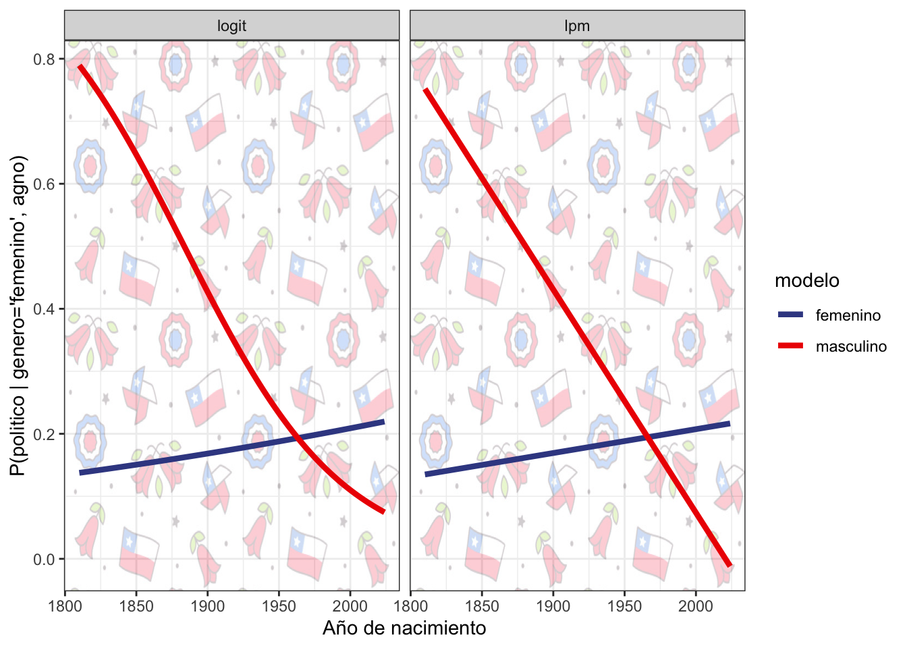

Bonus: Responder la pregunta bonus NO es un requisito necesario para obtener puntaje completo. Responder incorrectamente la pregunta bonus no afectará negativamente la nota obtenida, pero responderla correctamente mejorará la nota obtenida en un máximo de 0.5 puntos (o en la cantidad necesaria para obtener nota máxima si la nota original fuera superior a 6.5)
Introducción
En este trabajo usarán datos extraidos de 9.303 biografías de chilenos disponibles en Wikipedia (en hasta 160 lenguas). La información de este fue recopilada en el proyecto de investigación “Social Memory about Chileans in Wikipedia”, financiado por Wikimedia Research Fund. Si usas estos datos, por favor cita la siguiente publicación: Beytía, P., Rojas, C. & Cruz, C. (2024). Social memory about people from a country. The case of notable Chileans in Wikipedia. Wiki Workshop 2024.
Dado que contar con una biografía en Wikipedia es un indicador de prominencia social, utilizaremos esta subpoblación de individuos “notables” para modelar la probabilidad de que una persona destacada se dedique a la política, considerando como variables predictoras su género y año de nacimiento.
Los datos están disponibles en el repositorio del curso para ser descargados.
Calcula las probabilidades de que un hombre con biografìa en wikipedia sea político \((p_h)\) y de que una mujer con biografìa en wikipedia sea política \((p_m)\). Calcula la diferencia entre ambas proporciones.
p <- wiki_chileans %>%group_by(genero) %>%summarise(p=mean(politico)) %>%pull()p_m = p[1]p_h = p[2]cat("La probilidad de ser político para un hombre con bio en wikipedia es:", round(p_h, 2),"\n")
La probilidad de ser político para un hombre con bio en wikipedia es: 0.31
cat("La probilidad de ser político para una mujer con bio en wikipedia es:", round(p_m, 2),"\n")
La probilidad de ser político para una mujer con bio en wikipedia es: 0.19
diff_p =round(p_h - p_m, 2)cat("Diferencia entre probilidad de ser político entre hombres y mujeres (con bio en wikipedia):", diff_p)
Diferencia entre probilidad de ser político entre hombres y mujeres (con bio en wikipedia): 0.12
Usa un LPM para estimar la probabilidad de ser político en función del género. Escribe la ecuación de regresión correspondiente y presenta un summary() de los resultados. Explica el significado estadístico de cada coeficiente y su conexión con los resultados de la pregunta anterior.
La ecuación de regresión es: \(\mathbb{P}(\text{politico | genero)} = \beta_{0} + \beta_{1}\text{genero}\)
Call:
lm(formula = politico ~ factor(genero), data = wiki_chileans)
Residuals:
Min 1Q Median 3Q Max
-0.3103 -0.3103 -0.3103 0.6897 0.8107
Coefficients:
Estimate Std. Error t value Pr(>|t|)
(Intercept) 0.18925 0.01065 17.78 <0.0000000000000002 ***
factor(genero)masculino 0.12104 0.01184 10.22 <0.0000000000000002 ***
---
Signif. codes: 0 '***' 0.001 '**' 0.01 '*' 0.05 '.' 0.1 ' ' 1
Residual standard error: 0.4499 on 9290 degrees of freedom
Multiple R-squared: 0.01111, Adjusted R-squared: 0.01101
F-statistic: 104.4 on 1 and 9290 DF, p-value: < 0.00000000000000022
Donde:
\(\beta_0\) es el intercepto, que representa la probabilidad promedio de que una persona sea político cuando el género es “femenino” (grupo de referencia). El resultado obtenido indica que la probabilidad de que una mujer sea política es aproximadamente 18.9%.
\(\beta_1\) mide el cambio en la probabilidad de ser político cuando el individuo es “masculino” en comparación con el grupo de referencia. El resultado obtenido indica que, en promedio, los hombres tienen una probabilidad 12.1 puntos porcentuales mayor de ser políticos en comparación con las mujeres.
Por lo tanto, la probabilidad de que un hombre sea político se obtiene sumando los coeficientes del intercepto (\(\beta_0\)) y del género masculino (\(\beta_1\)): \(\mathbb{P}(\text{político | hombre}) = \beta_0 + \beta_1 = 0.18925 + 0.12104 = 0.31029\). Es decir, la probabilidad de que un hombre sea político es aproximadamente 31.0%.
Usa un LPM para estimar la probabilidad de ser político en función del género, controlando por el año de nacimiento de los individuos. Escribe la ecuación de regresión correspondiente y presenta un summary() de los resultados. Explica el significado estadístico de cada coeficiente y provee una breve interpretación sustantiva.
La ecuación de regresión es: \(\mathbb{P}(\text{politico | genero, agno)} = \beta_{0} + \beta_{1}\text{genero} + \beta_{2}\text{agno}\)
Call:
lm(formula = politico ~ factor(genero) + agno_nacimiento, data = wiki_chileans)
Residuals:
Min 1Q Median 3Q Max
-1.4715 -0.2683 -0.1543 0.3486 0.9604
Coefficients:
Estimate Std. Error t value Pr(>|t|)
(Intercept) 6.37212330 0.16343985 38.988 < 0.0000000000000002
factor(genero)masculino 0.06090585 0.01114238 5.466 0.0000000472
agno_nacimiento -0.00316628 0.00008355 -37.899 < 0.0000000000000002
(Intercept) ***
factor(genero)masculino ***
agno_nacimiento ***
---
Signif. codes: 0 '***' 0.001 '**' 0.01 '*' 0.05 '.' 0.1 ' ' 1
Residual standard error: 0.4188 on 9283 degrees of freedom
(6 observations deleted due to missingness)
Multiple R-squared: 0.1436, Adjusted R-squared: 0.1434
F-statistic: 778.5 on 2 and 9283 DF, p-value: < 0.00000000000000022
Donde:
\(\beta_0=6.372\) es el intercepto. Este valor es la probabilidad estimada de que una persona sea político en el caso hipotético de que el género sea femenino y el año de nacimiento sea cero (lo cual no es realista, pero representa un punto de referencia para el modelo).
\(\beta_1=0.06091\) mide el cambio en la probabilidad de ser político cuando el individuo es hombre, en comparación con el grupo de referencia (mujer). El coeficiente positivo indica que los hombres tienen, en promedio, una probabilidad 6.1 puntos porcentuales mayor de ser políticos en comparación con las mujeres, controlando por el año de nacimiento.
\(\beta_2=-0.003166\) mide el efecto del año de nacimiento sobre la probabilidad de ser político. Este coeficiente negativo sugiere que la probabilidad de ser político disminuye a medida que el año de nacimiento es más reciente. Cada aumento de un año en el año de nacimiento está asociado con una reducción la probabilidad de ser político en un 0.3166 puntos porcentuales.
Los resultados sugieren que la probabilidad de que una persona notable se dedique a la política disminuye a medida que el año de nacimiento es más reciente. Aún así, el efecto parcial del género indica que en cada año dado los hombres notables tienen una mayor probabilidad de ser políticos en comparación con las mujeres notables.
De acuerdo al modelo estimado en la pregunta anterior, ¿cuál es el efecto marginal del “año de nacimiento” sobre la probabilidad esperada de ser político?
El efecto marginal del “año de nacimiento” sobre la probabilidad esperada de ser político está dado por:
En base al modelo usado en I.3., calcula las probabilidades esperadas de ser políticos para un hombre y una mujer que cuentan con una biografía en wikipedia y nacieron en 1973. Expresa formalmente las ecuaciones correspondiente a estas predicciones.
# A tibble: 2 × 3
genero agno_nacimiento pred_prob
<chr> <dbl> <dbl>
1 femenino 1973 0.125
2 masculino 1973 0.186
Agrega una interacción entre genero y agno_nacimiento al modelo estimado en I.3. Escribe la ecuación de regresión y presenta un summary() de los resultados. Interpreta el efecto del año de nacimiento estimado en términos estadísticos y sustantivos.
La ecuación de regresión es: \(\mathbb{P}(\text{politico | genero, agno)} = \beta_{0} + \beta_{1}\text{genero} + \beta_{2}\text{agno} + \beta_{3}\text{genero:agno}\)
Call:
lm(formula = politico ~ factor(genero) * agno_nacimiento, data = wiki_chileans)
Residuals:
Min 1Q Median 3Q Max
-1.6192 -0.2415 -0.1665 0.3052 0.9263
Coefficients:
Estimate Std. Error t value
(Intercept) -0.5557115 0.5052994 -1.100
factor(genero)masculino 7.7678573 0.5327049 14.582
agno_nacimiento 0.0003816 0.0002587 1.475
factor(genero)masculino:agno_nacimiento -0.0039508 0.0002730 -14.471
Pr(>|t|)
(Intercept) 0.271
factor(genero)masculino <0.0000000000000002 ***
agno_nacimiento 0.140
factor(genero)masculino:agno_nacimiento <0.0000000000000002 ***
---
Signif. codes: 0 '***' 0.001 '**' 0.01 '*' 0.05 '.' 0.1 ' ' 1
Residual standard error: 0.4142 on 9282 degrees of freedom
(6 observations deleted due to missingness)
Multiple R-squared: 0.1625, Adjusted R-squared: 0.1623
F-statistic: 600.4 on 3 and 9282 DF, p-value: < 0.00000000000000022
Al añadir una interacción entre genero y agno_nacimiento permitimos que el efecto del año de nacimiento dependa de si el individuo es hombre o mujer (y viceversa). Es decir, no hay un único efecto del año de nacimiento si no dos. Para las mujeres con biografía en wikipedia la probabilidad esperada ser político viene dada por:
Por tanto, el efecto de agno_nacimiento sobre la probabilidad de ser político es: \(\frac{\partial \mathbb{P}(\text{politico} \mid \text{genero='femenino', agno})}{\partial \text{agno}} = \beta_{2}=\) 0.0003816
Por su parte, para las mujeres con biografía en wikipedia la probabilidad esperada ser político viene dada por:
Calcula la odds de que un hombre con biografìa en wikipedia sea político \((\text{odd}_h)\) y de que una mujer con biografìa en wikipedia sea política \((\text{odd}_m)\). Calcula el ratio entre ambas odds (hombre vs mujer) e interpreta el odds ratio resultante.
Implementación en R:
tabla <- wiki_chileans %>%with(table(genero,politico)) odd_m = tabla[1,2]/tabla[1,1]odd_h = tabla[2,2]/tabla[2,1]cat("Las odds de ser político para un hombre con bio en wikipedia es:", round(odd_h, 2),"\n")
Las odds de ser político para un hombre con bio en wikipedia es: 0.45
cat("Las odds de ser político para una mujer con bio en wikipedia es:", round(odd_m, 2),"\n")
Las odds de ser político para una mujer con bio en wikipedia es: 0.23
theta =round(odd_h/odd_m, 2)cat("Odds ratio de ser político entre hombres y mujeres (con bio en wikipedia$) es:", theta)
Odds ratio de ser político entre hombres y mujeres (con bio en wikipedia$) es: 1.93
El odds ratio de 1.93 indica que, entre personas con biografía en Wikipedia, los hombres tienen aproximadamente 1.93 veces las chances de ser políticos que las mujeres.
Usa una regresión logística para estimar la log-odds de ser político en función del género. Escribe la ecuación de regresión correspondiente y presenta un summary() de los resultados. Explica el significado estadístico de cada coeficiente y su conexión con los resultados de la pregunta anterior.
La ecuación de regresión es: \(\ln\frac{\mathbb{P}(\text{politico | genero)}}{1-\mathbb{P}(\text{politico | genero)}} = \beta_{0} + \beta_{1}\text{genero}\)
Call:
glm(formula = politico ~ factor(genero), family = binomial(link = logit),
data = wiki_chileans)
Coefficients:
Estimate Std. Error z value Pr(>|z|)
(Intercept) -1.45489 0.06041 -24.08 <0.0000000000000002 ***
factor(genero)masculino 0.65611 0.06536 10.04 <0.0000000000000002 ***
---
Signif. codes: 0 '***' 0.001 '**' 0.01 '*' 0.05 '.' 0.1 ' ' 1
(Dispersion parameter for binomial family taken to be 1)
Null deviance: 11140 on 9291 degrees of freedom
Residual deviance: 11030 on 9290 degrees of freedom
AIC: 11034
Number of Fisher Scoring iterations: 4
Donde:
\(\beta_0=-1.45489\) es el intercepto, que representa las log-odds de ser político para las mujeres (grupo de referencia).
\(\beta_1=0.65611\) es el coeficiente asociado al género masculino. Este valor indica que las log-odds de ser político para un hombre aumentan en 0.65611 en comparación con las mujeres.
También podemos interpretar estos resultados en términos de las odds de ser político
Para las mujeres (grupo de referencia), las odds de ser político son: \(\text{odd}_m = e^{\beta_0}\)
Para los hombres, las odds son: \(\text{odd}_h = e^{\beta_0 + \beta_1}\)
Por tanto, el odds ratio entre hombres y mujeres se obtiene como:
Por tanto, si el coeficiente \(\beta_1\) captura el efecto del género masculino en las log-odds de ser político, exponenciando este coeficiente, obtenemos el odds ratio, que refleja la ventaja relativa de los hombres frente a las mujeres en cuanto a la probabilidad de ser político.
Usa una regresión para estimar las log-odds de ser político en función del género, controlando por el año de nacimiento de los individuos. Escribe la ecuación de regresión correspondiente y presenta un summary() de los resultados. Explica el significado estadístico de cada coeficiente y provee una breve interpretación sustantiva.
La ecuación de regresión es: \(\mathbb{P}(\text{politico | genero, agno)} = \beta_{0} + \beta_{1}\text{genero} + \beta_{2}\text{agno}\)
Call:
glm(formula = politico ~ factor(genero) + agno_nacimiento, family = binomial(link = logit),
data = wiki_chileans)
Coefficients:
Estimate Std. Error z value Pr(>|z|)
(Intercept) 28.9710802 0.9664043 29.978 < 0.0000000000000002 ***
factor(genero)masculino 0.3660260 0.0688208 5.319 0.000000105 ***
agno_nacimiento -0.0156276 0.0004964 -31.484 < 0.0000000000000002 ***
---
Signif. codes: 0 '***' 0.001 '**' 0.01 '*' 0.05 '.' 0.1 ' ' 1
(Dispersion parameter for binomial family taken to be 1)
Null deviance: 11136.4 on 9285 degrees of freedom
Residual deviance: 9839.2 on 9283 degrees of freedom
(6 observations deleted due to missingness)
AIC: 9845.2
Number of Fisher Scoring iterations: 4
\(\beta_0=28.9711\) es el intercepto, que representa las log-odds de ser político para las mujeres nacidas en el año 0 (aunque no es una situación realista, es el punto de referencia del modelo).
\(\beta_1=0.3660\) es el coeficiente que mide el efecto de ser hombre sobre las log-odds de ser político, controlando por el año de nacimiento. Este valor indica que, para cualquier año dado, las log-odds de ser político aumentan en 0.3660 si el individuo es hombre, en comparación con una mujer.
\(\beta_2=-0.01563\) es el coeficiente que mide el efecto del año de nacimiento sobre las log-odds de ser político. Este coeficiente negativo indica que a medida que el año de nacimiento aumenta (es decir, para individuos nacidos más recientemente), las log-odds de ser político disminuyen. Específicamente cada año adicional está asociado con una reducción las log-odds de ser político en aproximadamente 0.0156 – tanto para hombres como para mujeres.
El coeficiente negativo del año de nacimiento sugiere una tendencia histórica, donde las personas personas notables de generaciones más antiguas tenían una mayor probabilidad de ser políticos, mientras que en generaciones más recientes las ocupaciones de personas notables de habrías diversificado.
De acuerdo al modelo estimado en la pregunta anterior, ¿cuál es la fórmula para el efecto marginal del “año de nacimiento” sobre la probabilidad esperada de ser político?
En base al modelo usado en II.3., calcula las probabilidades esperadas de ser políticos para un hombre y una mujer que cuentan con una biografía en wikipedia y nacieron en 1973. Expresa formalmente las ecuaciones correspondiente a estas predicciones.
# A tibble: 2 × 3
genero agno_nacimiento pred_prob
<chr> <dbl> <dbl>
1 femenino 1973 0.134
2 masculino 1973 0.183
De acuerdo al modelo estimado en II.3., ¿cual es el efecto marginal del año de nacimiento sobre la la probabilidades esperadas de ser políticos para un hombre y una mujer que cuentan con una biografía en wikipedia y nacieron en 1973. Expresa formalmente las ecuaciones correspondiente dichos efectos. Compara los resultados con la respuesta dada en I.4.
A diferencia del LPM, en el modelo de regresión logística el efecto del año de nacimiento depende del valor de la misma variable y del valor de otras covariables. Esta característica regula que los efectos sean muy limitados cuando las probabilidades se acercan a cero o uno, mientras que pueden ser mayores lejos de dichos valores.
Bonus:
Agrega una interacción entre genero y agno_nacimiento al modelo estimado en II.3 y presenta un summary() de los resultados.
Call:
glm(formula = politico ~ factor(genero) * agno_nacimiento, family = binomial(link = logit),
data = wiki_chileans)
Coefficients:
Estimate Std. Error z value
(Intercept) -6.638093 3.332294 -1.992
factor(genero)masculino 40.455108 3.498909 11.562
agno_nacimiento 0.002653 0.001704 1.557
factor(genero)masculino:agno_nacimiento -0.020607 0.001792 -11.500
Pr(>|z|)
(Intercept) 0.0464 *
factor(genero)masculino <0.0000000000000002 ***
agno_nacimiento 0.1195
factor(genero)masculino:agno_nacimiento <0.0000000000000002 ***
---
Signif. codes: 0 '***' 0.001 '**' 0.01 '*' 0.05 '.' 0.1 ' ' 1
(Dispersion parameter for binomial family taken to be 1)
Null deviance: 11136.4 on 9285 degrees of freedom
Residual deviance: 9678.1 on 9282 degrees of freedom
(6 observations deleted due to missingness)
AIC: 9686.1
Number of Fisher Scoring iterations: 4
Reproduce el siguiente gráfico que muestra – en base a los LMP y logit más complejos (con interacción) – las probabilidad predichas de ser polìtico para hombres y mujeres con biografìa en wikipedia nacidos entre los años 1810 y 2024. Compara principales resultados arrojados por ambos modelos.
Implementación en R:
# crea un nuevo set de datos sobre los cuales crear prediccionesnewx <- wiki_chileans %>%data_grid(genero=c('masculino','femenino'), agno_nacimiento=1810:2024,.model=logit_3)# crea valores predichos para el nuevo set de datosxb_lpm =predict(lpm_3 , newdata = newx)xb_logit =predict(logit_3, newdata = newx)prob_lpm = xb_lpmprob_logit =1/(1+exp(-xb_logit))newy <- newx %>%mutate(prob_lpm = prob_lpm, prob_logit = prob_logit) %>%pivot_longer(c(prob_lpm,prob_logit), names_to ="model", names_prefix ="prob_")# Load the Chilean flag image (make sure to have the image in your working directory)flag <-readPNG("chilean_flag.png")# If the image doesn't already have an alpha channel (transparency), you can add one.# Assuming the image is RGB, create an RGBA version by adding an alpha channel.flag_with_alpha <-array(0, dim =c(dim(flag)[1], dim(flag)[2], 4))flag_with_alpha[,,1:3] <- flag[,,1:3] # Copy RGB channelsflag_with_alpha[,,4] <-0.2# Set alpha to 0.2 for transparency (adjust as needed)# Add the image as a background to the plot with transparencynewy %>%ggplot(aes(x = agno_nacimiento, y = value, group=genero, colour = genero)) +annotation_custom(rasterGrob(flag_with_alpha, width =unit(1, "npc"), height =unit(1, "npc")),-Inf, Inf, -Inf, Inf) +# Ensures the image covers the whole plotgeom_line(linewidth =1.5) +labs(y ="P(politico | genero='femenino', agno)", x ="Año de nacimiento", colour ="modelo") +facet_grid( . ~ model ) +scale_color_aaas() +theme_bw() +theme(panel.background =element_blank()) # Ensures a blank background so the image shows

¿Cuál es el mayor efecto marginal posible de año de nacimiento para hombres y mujeres?
El mayor efecto marginal siempre ocurre cuando \(p_{i}=0.5\), por tanto el mayor efecto marginal del año de nacimiento para las mujeres es \(\beta_{3}/4\) y para los hombres es \((\beta_{3} + \beta_{4})/4\).
Para las mujeres, el mayor efecto marginal del año de nacimiento es un aumento muy pequeño y positivo de 0.066 puntos porcentuales en la probabilidad de ser política. Para los hombres, el mayor efecto marginal es negativo, aproximadamente -0.45 puntos porcentuales, lo que sugiere que a medida que avanza el año de nacimiento, la probabilidad de ser político disminuye más rápidamente en el caso de los hombres.